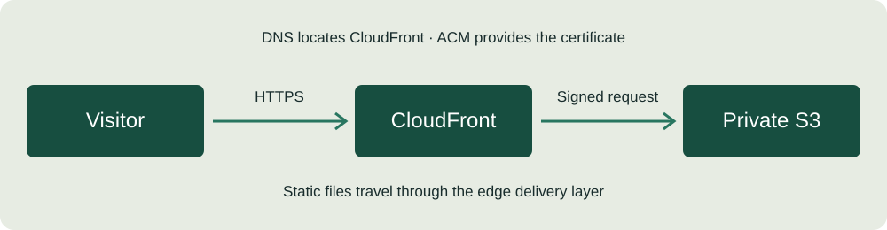

S3
Stores HTML, CSS, JavaScript, and images. Block Public Access remains enabled.
The delivery path
Four AWS services each have a focused role in the intended architecture.

Stores HTML, CSS, JavaScript, and images. Block Public Access remains enabled.
Serves the site, redirects HTTP to HTTPS, and signs origin requests using Origin Access Control.
ACM supplies the domain certificate. DNS maps the custom domain to the distribution. Route 53 can manage DNS for the final project architecture.